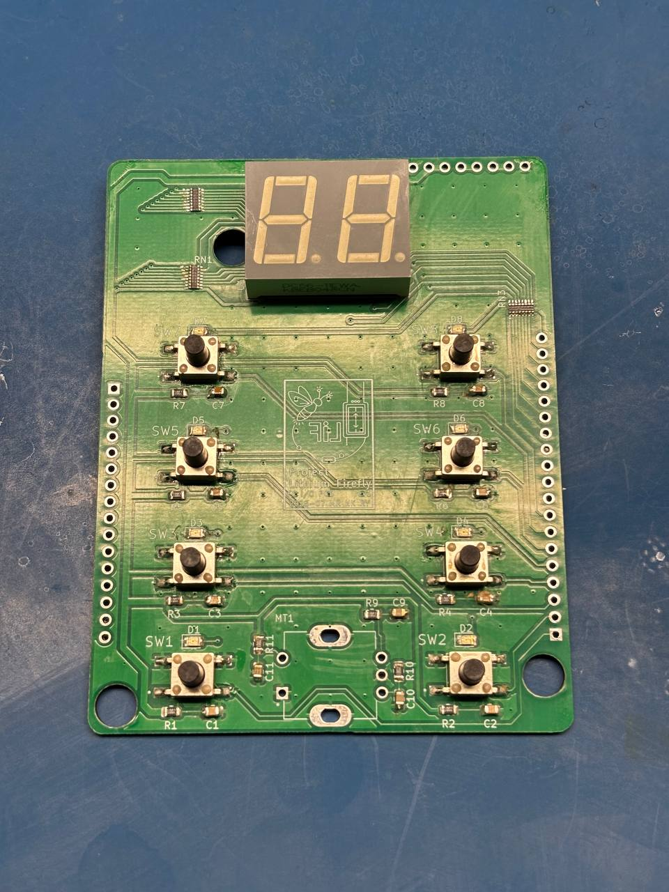
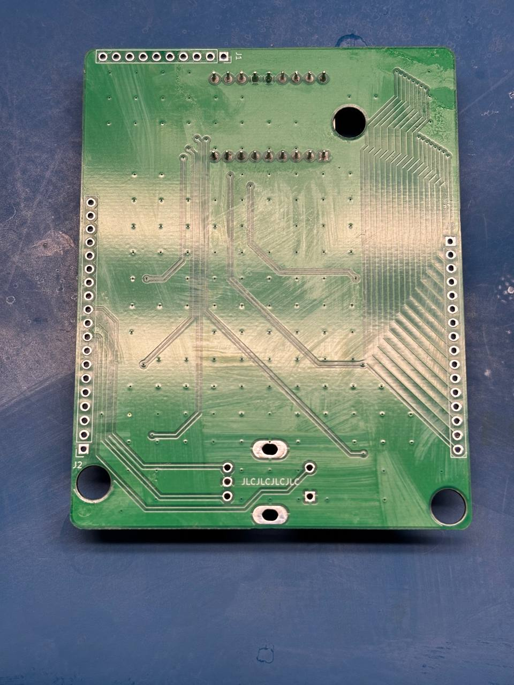
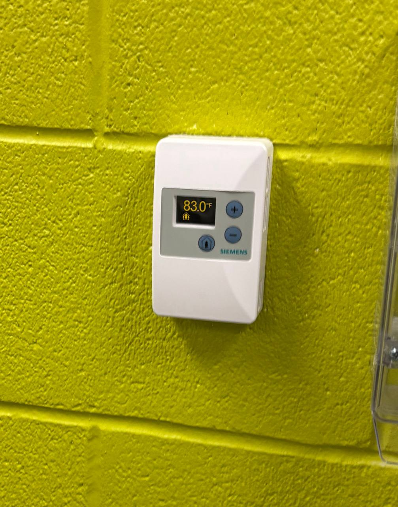

I/O PCB Soldering
I soldered one I/O PCB. I did not install the pin headers because female headers were unavailable. Based on my prior experience, it is preferable to solder the stack-up headers while both boards are connected so that the pins remain properly aligned.


The laboratory conditions were also extremely uncomfortable while I was completing this work.

Integrated Testing with Nick
Nick and I met in the laboratory to perform integrated testing of his WebSocket implementation and my cleaned-up SC code. We discovered a critical flaw in the virtual-door implementation: the database did not distinguish between a CAN door-state update and a website door-state update. As a result, the SC could repeatedly process its own database changes in an infinite loop.
Because an integer was already used to represent the door state, we corrected the issue by using an additional bit to identify which source had last updated the database. The following values were defined:
- 0: The website last updated the database, and the door is closed.
- 1: The website last updated the database, and the door is open.
- 2: CAN, through the CC, last updated the database, and the door is closed.
- 3: CAN, through the CC, last updated the database, and the door is open.
After I corrected this issue and Nick troubleshot the WebSocket door-update code, we recorded a final demonstration of the complete project.